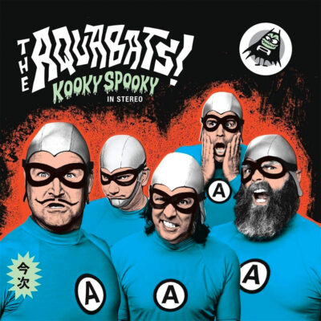
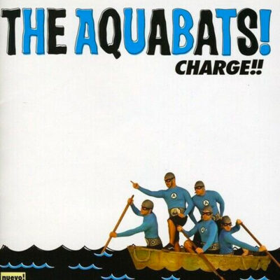
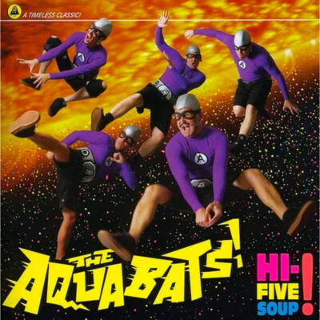
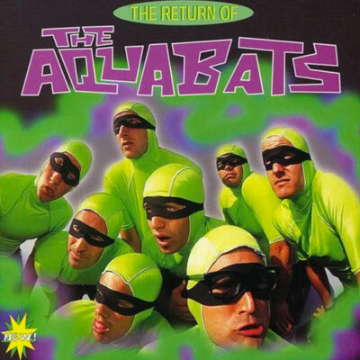
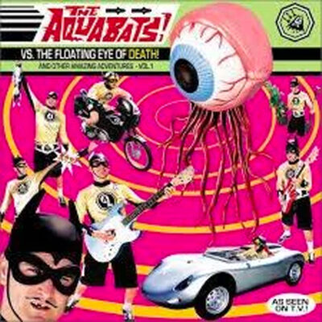
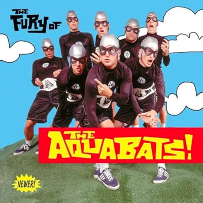

The Aquabats are really, really weird, and The Transplants/blink-182/+44/Colt 45’s Travis Barker used to drum for ‘em… Really! We know it doesn’t make a lot of sense, but deal with it. The Aquabats formed in 1994 in Huntington Beach, California, home of both Avenged Sevenfold and many proud members of the Alt-Right, and released their debut album, the cleverly named “The Return of the Aquabats” to underground acclaim to third wave ska-punk fans, past/future/present Comic-Con attendees, and droopy, drooly, driveling, and darn tootin’ dorks who also play D&D whilst chanting awkward and unintelligible sonnets like nerd icon Steve “Carl Winslow’s Biggest Fan” Urkel, but not the suave, sensual, sincere, and staggering beast, Stefan Urquelle.
6. Kooky Spooky… In Stereo (2020)
Longtime, casual and fair-weather fans of The Aquabats’ music, personas, stage clothes, and goofy, goofy banter likely don’t know too much about the band’s newest LP “Kooky Spooky… In Stereo” as it came out at the height of the pandemic, and we all had other things to think about. Still, like its six predecessors, this LP puts the “enjo” in “enjoyable,” and this record is absolutely perfect for bubbly babies, acerbically witty adolescents, newly married twenty-somethings, and ne’er do well nursing homes sans Ben Stiller’s character in “Happy Gilmore” but with Wheel of Fortune’s letter turner Bob Barker. Continuing the sterling and sound tradition that the band started on their fourth studio album “Charge!,” the wild and crazy (The) Aquabats ended each song title with an exclamation point, and were happy to yell this at the sun in both bold and italic… They just want to party!
Play it again: “No One Wants To Party!”
Skip it: “She’s Gonna Live Forever!”
5. “Charge!!” (2005)
The Aquabats’ fourth LP “Charge!!” actually doubles as a naval command and an Uber/Lyft shriek, and picks up where its odd-in-the-best way third/underrated record “The Aquabats vs. the Floating Eye of Death!” with an almost total upstroke elimination segueing into Devo territory. Released on The Offspring and American Airlines’ Dexter Holland and the former Offspring bassist, Greg K. of Kmart’s now-defunct label Nitro Records, previous home to AFI, Crime in Stereo, formerly featuring current Aquabats guitarist Ian “Eagle ‘Bones’ Falconhawk” Fowles, who joined The Aquabats on their next wet release, “Hi-Five Soup!,” Son of Sam, and ColdBrew, this record served as a comeback to many misinformed dumbos who were turned off by its fantastic predecessor. The band released various compilations, EPs, and laserdiscs between album number three and four, and this LP had the longest gap between full-lengths until the year of our lord known as 2020.
Play it again: “Fashion Zombies”
Skip it: “Mechanical Ape!”
4. Hi-Five Soup! (2011)
Hey homies, “Hi-Five Soup!” is undoubtedly the best Aquabats LP of the 21st century, and we will get soaked for its cause. Its album cover is a fun outer space venture honoring New England Clam Chowder’s relationship with your left hand, whilst your right one swings back in the form of a former B.F.F. fisticuff session twice to honor each exclamation point in this studio album’s title, providing awesome forces in your dreams/pants. Fun fact: The late and great distinct rapper/icon/Czar Biz Markie is featured on track four, “Radio Down?” and said song provides a confluence of emotions and/or an FM wheelie! Speaking of features, Strong Bad, a fictional character from “Homestar Runner” also cameos on “Pink Pants! In closing, The Aquabats’ independently filmed TV pilot “The Aquabats! Super Show!” got picked up by The Hub a few months after this record came out.
Play it again: “Hey Homies!”
Skip it: “Food Fight On The Moon!”
3. The Return of The Aquabats (1996)
The one that started it all, “The Return of The Aquabats,” is actually a sequel to a self-titled LP that doesn’t exist? The world may never know! Speaking of sequels, “Martian Girl,” “Idiot Box,” and “Playdough” appear in re-recorded form on “The Fury of The Aquabats,” and “Playdough” itself has the distinction of being this album’s opening track and its follow-up’s bonus hidden track… It’s crazy, man! Self-released on their own label Horchata Records, also home to the underrated Attaboy Skip, and eventually re-released by Fearless Records, the current home to Chase Atlantic, Boys Like Girls, and Bon Jovi six years later, we want to give a shout out to the OG AB mega line-up consisting of The Caped Commander, The Caped Crusader, Chain Saw, OC’s Chain Reaction, The Brain, Pinky, Crash McLarson, Crash Romeo, Roddy B., “Rowdy” Roddy Piper, Nacho, Queso, Cat Boy, Batgirl, Prince A., and Meghan Markle.
Play it again: “Playdough”
Skip it: “Aquabat March”
2. The Aquabats vs. the Floating Eye of Death! (1999)
The Aquabats’ third album “The Aquabats vs. the Floating Eye of Death!” is the last of three LPs to contain the band’s name in its title, but this one is divisive amongst the band’s fans and polarizing for others. Still, this is the band’s last 1990s album, and caused the then-eight piece much pain and strife, as it fell quite short of expected sales, forced the band to be dropped from the label one year later, and created a hiatus of sorts for the next batch of years. Sometimes great art isn’t appreciated by the public until years later, or ever, as people be stupid, but this record stands the test of time for its creativity. To put it simply, no album from any band pre-1999 and 2000-beyond sounds like this one, and “Giant Robot-Birdhead” should be an anthem for anyone with taste… Hello/good night!
Play it again: “Giant Robot-Birdhead”
Skip it: “Tiny Pants”
1. The Fury of The Aquabats! (1997)
Sophomore slump or comeback of the year? Both? Neither? The Aquabats execute surf guitar in some form on each LP, but this album “The Fury of The Aquabats has a theme song and a metaphorical one echoing peak Dick Dale. 1997 was also a peak year for the ska/ska-punk/third-wave/swing world with the ultra-successful The Mighty Mighty Bosstones “Let’s Face It,” Goldfinger’s “Hang-Ups,” Save Ferris’ “It Means Everything,” and Lord Belial’s two-tone classic “Enter the Moonlight Gate” records. Also, this album briefly broke the band into the mainstream with the band’s now-anthem “Super Rad!,” of which Scullions’ Bobcat “Evil but Eventually Good Zed from ‘Police Academy 2: Their First Assignment’ and several other of its sequels, or “Shakes the Clown” if you Want to Laugh/Cry” Goldthwait directed was featured on your idiot box via MTV.
Play it again: “Cat with 2 Heads!”
Skip it: “Lobster Bucket”
The post Every The Aquabats Album Ranked Worst To Best appeared first on The Hard Times.

 - Note that you don't have to do this. Feedbro scans feeds automatically in the background all the time based on the intervals you have defined.")


 Twitter
Twitter Facebook
Facebook VK
VK LinkedIn
LinkedIn Telegram
Telegram Digg
Digg Reddit
Reddit Tumblr
Tumblr Instapaper
Instapaper Yammer
Yammer Pocket
Pocket Evernote
Evernote Flipboard
Flipboard Hootsuite
Hootsuite Buffer
Buffer Gmail
Gmail Email
Email